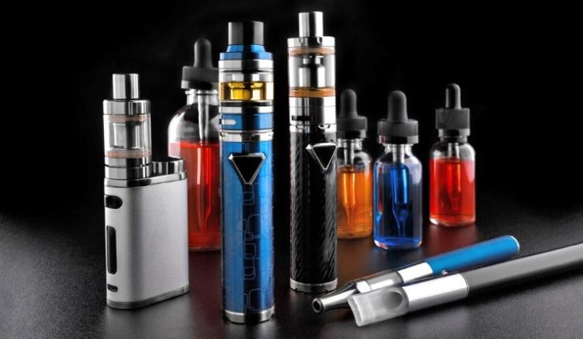
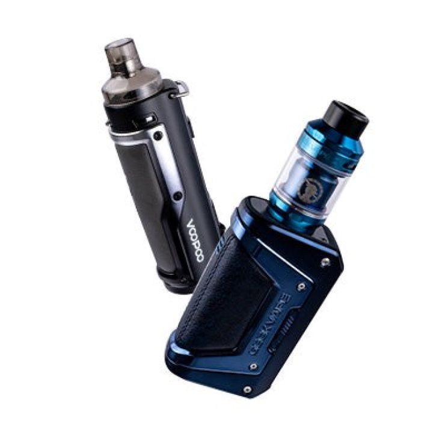

| Lorem, ipsum dolor. | Lorem, ipsum dolor. | Lorem, ipsum dolor. | Lorem, ipsum dolor. | Lorem, ipsum dolor. |
|---|---|---|---|---|
| Lorem, ipsum. | Lorem, ipsum. | Lorem, ipsum. | Lorem, ipsum. | Lorem, ipsum. |
| Lorem, ipsum. | Lorem, ipsum. | Lorem, ipsum. | Lorem, ipsum. | Lorem, ipsum. |
| Lorem, ipsum. | Lorem, ipsum. | Lorem, ipsum. | Lorem, ipsum. | Lorem, ipsum. |
| Lorem, ipsum. | Lorem, ipsum dolor. | Lorem, ipsum. | ||
Hút thuốc lá gây hại cho sức khỏe của bạn và những người xung quanh. Bạn đã nghe nhiều về tác hại của khói thuốc lá và cố gắng tìm kiếm một phương thức thay thế hoàn toàn cho thuốc lá truyền thống và các sản phẩm thuốc lá có khói khác. Một sản phẩm ban đầu được cho là thay thế và cai nghiện thuốc lá truyền thống được biết đến với tên gọi thuốc lá điện tử. Nhưng hiện nay đã có nhiều nghiên cứu cho thấy, thuốc lá điện tử không những không thể giúp cai nghiện thuốc lá mà còn mang đến nhiều tác hại xấu.
 Thuốc lá điện tử là thiết bị sử dụng pin làm nóng dung dịch điện tử (e-liquid) để tạo ra sol khí/khói cho người dùng hít vào. Thuốc lá điện tử rất đa dạng về hình dạng và kích thước. Thành phần chính gồm: nicotin, còn có propylene glycol và các chất tạo hương vị. Ngoài ra, chúng còn chứa thêm ít nhất 60 hợp chất hóa học khác. Nicotine là một chất gây nghiện cao có trong thuốc lá truyền thống, xì gà và các sản phẩm thuốc lá khác.
Thuốc lá điện tử có rất nhiều tên gọi: “e-cigs,” “e-hookahs,” “mods,” “bút vape,” “vapes”…Một số thuốc lá điện tử được sản xuất dưới dạng thuốc điếu truyền thống, xì gà hay ống điếu, có loại giống cây bút, ổ USB và những vật dụng thường ngày khác.
Các hợp chất chứa trong thuốc lá điện tử có nguy cơ cao gây ung thư. Ngoài ra, chúng có thể gây tổn thương phổi cấp tính như: viêm phổi, tắc nghẽn phế quản. Thuốc lá điện tử có thể gây nhiều nguy hại cho sức khỏe tim mạch: tăng nguy cơ xơ vữa động mạch, huyết khối, nhồi máu cơ tim. Nicotine trong thuốc lá điện tử làm giảm lưu lượng máu, gây ra nguy cơ đau thắt ngực, suy tim, đột quỵ.
Nicotin gây suy giảm miễn dịch, giảm sức đề kháng. Chúng còn gây hại cho sự phát triển não bộ ở trẻ em, gây suy giảm trí nhớ.
Nicotine là chất gây nghiện, người sử dụng nó bắt buộc phải dùng tiếp, nếu không sẽ vật vã khó chịu, không dứt ra được.
Thuốc lá điện tử có thể gây chấn thương nghiêm trọng do nổ pin.
Từ những tác hại thuốc lá điện tử đưa đến, bạn nên ngưng ngay việc sử dụng cúng để bảo vệ sức khỏe bản thân và những người thân quanh bạn. Nếu bạn chưa từng hút thuốc hoặc dùng các sản phẩm tương tự hay thuốc lá điện tử, đừng thử dù chỉ một lần.